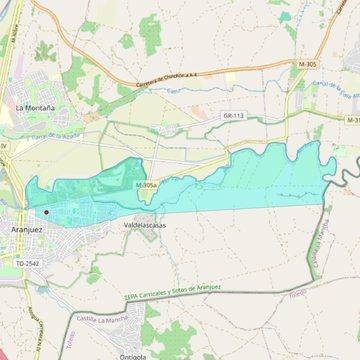

Nuestra Señora de las Angustias
- Arciprestazgo
- Aranjuez
- Población
- Aranjuez
- Dirección postal
- Avda. del Príncipe, 73
- Código postal
- 28300
- Extensión
- 8,47 km² (847 ha)
- Teléfono
- 918 910 513
- Correo electrónico
- nsangustias-aranjuez@diocesisgetafe.es
- Información demográfica
- De la parroquia · De la población (Aranjuez) · Del arciprestazgo (Aranjuez)
- Resumen para imprimir
- La parroquia en una hoja (A4)


Descargar mapaLímites según decreto
Partiendo de la glorieta Santiago Rusiñol, arrancan por el eje de la calle la Reina; siguen por el eje de la calle Capitán Angosto G. Castrillón (en dirección sur), por el eje de la calle Las Infantas (en dirección sureste), por el eje de la calle Almansa (en dirección sureste), por el eje de la calle Los Cuarteles (en dirección noreste), por una recta imaginaria hasta el límite de las provincias Madrid-Toledo (en dirección este), por el límite de las provincias Madrid-Toledo (en dirección noreste), por el río Tajo (en dirección oeste y suroeste), por el eje del puente Barcas (en dirección sur) hasta la glorieta Santiago Rusiñol, punto de partida. (Decreto de creación de límites, 21-6-2005; B.O. julio-agosto de 2005, pág. 777)
¿Algún dato de esta parroquia es incorrecto o ha cambiado? Comuníquenoslo.